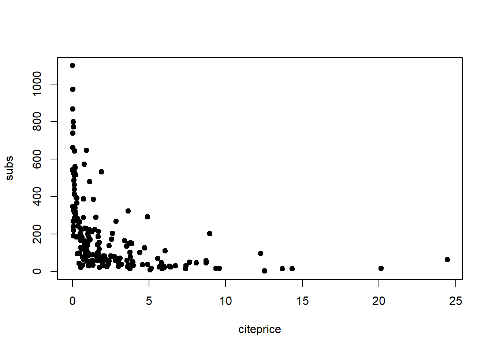

SW本8章の表8.2再現を試みる. 以下のライブラリを導入する
library(knitr)
library(mosaic)
library(AER)
library(texreg)
library(tidyverse)またロバスト分散を何度も計算するため次の関数を作っておく.
## convenience function: HC1 covariances
hc1 <- function(x) vcovHC(x, type = "HC1")データ整理
## data and transformed variables
data("Journals", package = "AER")
journals <- Journals %>% mutate(citeprice = price/citations,
age = 2000 - foundingyear,
chars = charpp*pages/10^7) %>%
select(subs,price,citeprice,age,chars)plot(subs ~ citeprice, data = journals, pch = 19)
plot(subs ~ citeprice, data = log(journals), pch = 19)
fm1 <- lm(subs ~ citeprice, data = log(journals))
abline(fm1)
fm2 <- update(fm1, .~ citeprice + age + chars)
fm3 <- update(fm1, .~ citeprice * age + chars)
fm4 <- update(fm3, .~ . + I(citeprice^2) + I(citeprice^3))ll = list(fm1,fm2,fm3,fm4)
selist <- ll %>% map(~coeftest(.,hc1)[,2])
pvlist <- ll %>% map(~coeftest(.,hc1)[,4])
htmlreg(ll, override.se=selist,override.pvalues=pvlist,
custom.model.names = c("(1)","(2)","(3)","(4)"),
reorder.coef = c(2,6,7,4,3,5,1),
include.rsquared = FALSE,digits=3)| (1) | (2) | (3) | (4) | ||
|---|---|---|---|---|---|
| citeprice | -0.533*** | -0.408*** | -0.899*** | -0.961*** | |
| (0.034) | (0.044) | (0.145) | (0.160) | ||
| I(citeprice^2) | 0.017 | ||||
| (0.025) | |||||
| I(citeprice^3) | 0.004 | ||||
| (0.006) | |||||
| chars | 0.206* | 0.229* | 0.235* | ||
| (0.098) | (0.096) | (0.098) | |||
| age | 0.424*** | 0.374** | 0.373** | ||
| (0.119) | (0.118) | (0.118) | |||
| citeprice:age | 0.141*** | 0.156** | |||
| (0.040) | (0.052) | ||||
| (Intercept) | 4.766*** | 3.680*** | 3.962*** | 3.948*** | |
| (0.055) | (0.416) | (0.411) | (0.417) | ||
| Adj. R2 | 0.555 | 0.607 | 0.626 | 0.622 | |
| Num. obs. | 180 | 180 | 180 | 180 | |
| RMSE | 0.750 | 0.705 | 0.688 | 0.691 | |
| p < 0.001, p < 0.01, p < 0.05 | |||||